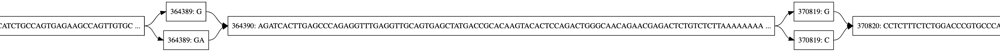

Google Summer of Code 2019—Final Submission
The Google Summer of Code for 2019 is coming to a close. I’ve been working on the Graphite project aimed at creating a variation graph tool under the Open Bioinformatics Foundation.
Genome Graphs
I shall give an overview of genome graphs; for a more thorough introduction, I advise reading On a reference pan-genome model or my very own An Introduction to Variation Graphs.
Variation graphs are a class of genome graphs that, among other things, maintain:
- path information—a full walk within the graph along the edges
- a strong mapping between nodes on the graph and their positions on the reference
All this with the main aim of representing genomic variation.
Currently genomes are represented as a consensus; for example, here’s part of chromosome 20 of the human genome:
TGGGAGAGAACTGGAACAAGAACCCAGTGCTCTTTCTGCTCTACCCACTGACCCATCCTCTCACGCATCATACACCCATA
CTCCCATCCACCCACCTTCCCATTCATGCATTCACCCATTCACCCACCTTCCATCCATCTACCATCCACCACGTACCTAC
ACTCCCATCTACCATCCAACCACATTTCCATTCACCCATCCTCCCATCCATCAACCCTCCAATCCACCACCCACAGACCT
TCCCATCCATTCATTTACCCATCCACATATTCACCCACCCTCCCATCCATCCATCTACTGTCTATCACCTACTCATTTTC
...However, variation does exist on this chromosome between individuals. To demonstrate, when a single file of variation data is “applied” to it we end up with a graph that can be represented as in the below zoomed in section of chromosome 20. 
Not all graphs are linear like the one above; in fact, the kind of graphs we’re hoping to generate soon will have many breaks and will look pretty jumbled up. The amount of variation within and between genomes depends on a lot of factors including but not limited to the organism(s) whose genomes are studying and how evolutionarily distant the genomes we are comparing are (pan-genomes).
Reference Bias
The reference being a consensus introduces a problem known as reference bias; which is analogous to a false negative during read mapping, that is, claiming that a variation does not exist where it actually exists. Research has shown an improvement in read mapping of short read data when short reads are mapped to a reference graph instead of a reference consensus.
Currently, graphite shows that we can generate a graph from a reference and variation data and progressively update it; not far from what Heng Li theorizes in: On a reference pan-genome model. We plan on supporting the generation of graphs from short and long-read data on its own (de novo), you can track its progress under the alignment project board.
Why Racket?
You may wonder why Graphite is written in Racket yet the project name is Add Variant Graph (VG) support to BioD. Genome graphs have been theorized and written about for a while now but there are only a few tools that implement them and there has been even much less use by bioinformaticians.
We decided to build something people can use over just adding variation graph support to BioD believing that it would’ve taken me longer to write something people could use in D.
But why Racket and not another language or LISP?
I have experience in functional programming and particularly professional experience with LISPs, I could, therefore, move much faster in it. Racket is a good LISP to work in in an unfamiliar domain because it has a straightforward build system compared to the overhead of the JVM and leiningen in the most popular LISP, Clojure does and has an easy to use C/C++ FFI, languages used in a lot of Bioinformatics applications and libraries. Being untyped and programming in LISP being REPL driven also helps to venture into unfamiliar territory. Racket has immutability in a lot, if not all, of its data structures which also helps with all the data manipulation we would have to do. Finally, Racket also implements core programming concepts elegantly compared to many other languages for example with its hygienic macros.
This shouldn’t make the D community feel betrayed because given what we know now, we can always go back and reimplement either all or part of Graphite in D, especially for the possible performance improvements.
Done
For the fine detail install and set up Graphite as instructed in the README and run graphite --help.
Underlying graph representation
We implemented the graph as an association hash table. I went into more detail on how it’s built and the rationale behind certain choices in Creating the Initial Variation Graph and Justifying SHA256 in Graphite.
Construct
Graphite allows you to build an initial graph out of a reference in FASTA format and a VCF file. In the example below I output a serialized graph but you can output .dot or .gfa.
./bin/graphite construct \
-o rsv1.gra \
-f gra \
data/RSV/refererence_and_vcf_file/9465113.fa data/RSV/refererence_and_vcf_file/H_3801_22_04.freebayes.vcfUpdate
Formally, progressive construction. Graphite lets the user update a serialized graph generated via construct. In the update, it takes serialized graph .gra and variation data in VCF. Example:
./bin/graphite update \
-o rsv2.dot \
-f dot \
rsv1.gra data/RSV/refererence_and_vcf_file/fake_H_3801_22_04.freebayes.vcfView
Graphite allows you to generate graphs in
- dot for visualization via GraphViz
- gfa for visualization with tools like bandage
- gra a serialized graph, it can’t be visualized.
Using update and view, one can visualize changes introduced by different VCF files as of writing this. The view command takes a serialized graph .gra, an output format, and an output file as arguments. Example:
./bin/graphite view \
-o rsv1.dot \
-f dot \
rsv1.graTo Do
Look at the Graphite project boards for further detail.
Partial Order Alignment
This would allow for aligning reads to a graph or against each other bypassing the consensus reference.
For now, graphite can only align against strings (however this functionality isn’t exposed because it’s not ready yet) mainly because it only stores forward edges which makes it hard to implement Partial Order Alignment (POA) which strictly depends on backward edges. The short term options are adding a pre-processing step to generate backward edges or using Racket’s FFI to call spoa or gssw. In the medium to long term Graphite’s nodes should support backward edges which would, on top of assisting with POA, allow for encoding more complex mutations such as inversions.
Search
This involves having a kmer, the substring of a genome, and searching for its most likely position in the graph. I have multiple problems with this as of now such as completely not finding kmers at all or having them point to the wrong location.
Complementarity
Graphite doesn’t support complementarity (only supports the positive strands) therefore searching for a kmer in the negative strand wouldn’t even work. I am evaluating different ways of implementing complementarity.
A Graph Extension of the Burrows-Wheeler Transform
Search doesn’t work for some strings and even worse the method I am using to build the index is not ideal. Currently, I am building the FM index via a Burrows-Wheeler Transform (BWT) which is in turn built from rotating the given string, this is far from ideal. A better strategy I am considering is:
- generate a suffix tree via Ukkonen’s algorithm
- traverse the suffix tree via a depth-first search to build a suffix array
- use the suffix array to generate a BWT
I could then complement the BWT and then generate the FM index and therefore get fast queries onto the graph. I believe this to be the basic idea behind A Graph Extension of the Positional Burrows-Wheeler Transform and its Applications.
Adding a Metadata Field
We could add a metadata field to the nodes which will allow for something like inbuilt annotation support.
Miscellaneous
Another feature not related to Bioinformatics but is surprisingly lacking in Racket is to extend cmdline to have command-line options as is described in Multi-command-line in Racket.
To reiterate, you can look at these 3 other posts regarding Graphite:
- An Introduction to Variation Graphs
- Creating the Initial Variation Graph
- Justifying SHA256 in Graphite
Acknowledgements
I’d like to acknowledge the contribution of the following people. My mentors
and those who weren’t my mentors but helped along the way by offering technical advice, testing graphite, reading the code or reviewing the blog posts.